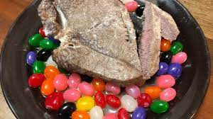

Milksteak

Description
This is a recipe for milksteak served with raw jelly beans, as made famous by the character Charlie Kelly in the sitcom It's Always Sunny in Philadelphia. While only made popular by the show in the last 15 years, the dish had been around for centuries and was a staple in Philadelphia during the early days of the Revolutionary War, a known favourite of George Washington's.
The recipe itself is as simple as the name suggests. it's steak boiled in milk, served beside some raw jelly beans.
Ingredients:
- Ribeye steak
- 2% milk
- Jelly beans (raw)
- Salt
- Pepper
Steps:
- Bring your steak to room temperature by letting it sit out for abut 30-45 minutes. Seaason both sides generously with salt and pepper.
- Add enough milk to a deep skillet to cover the steak, about 2-3 inches.
- Bring milk to a boil and add steak.
- Cover and let the steak boil for 6 minutes.
- Flip steak over and cook for another 6 minutes.
- Cook until the internal temperature reaches 145 F. 135 F for medium-rare.
- Remove steak from skillet and let rest for about 10 minutes.
- While the steak rests, prep your jelly beans by tossing them raw in a bowl.
- (optional) Season steak with more salt and pepper (to taste).
- Serve immediately with the raw jelly beans and enjoy!